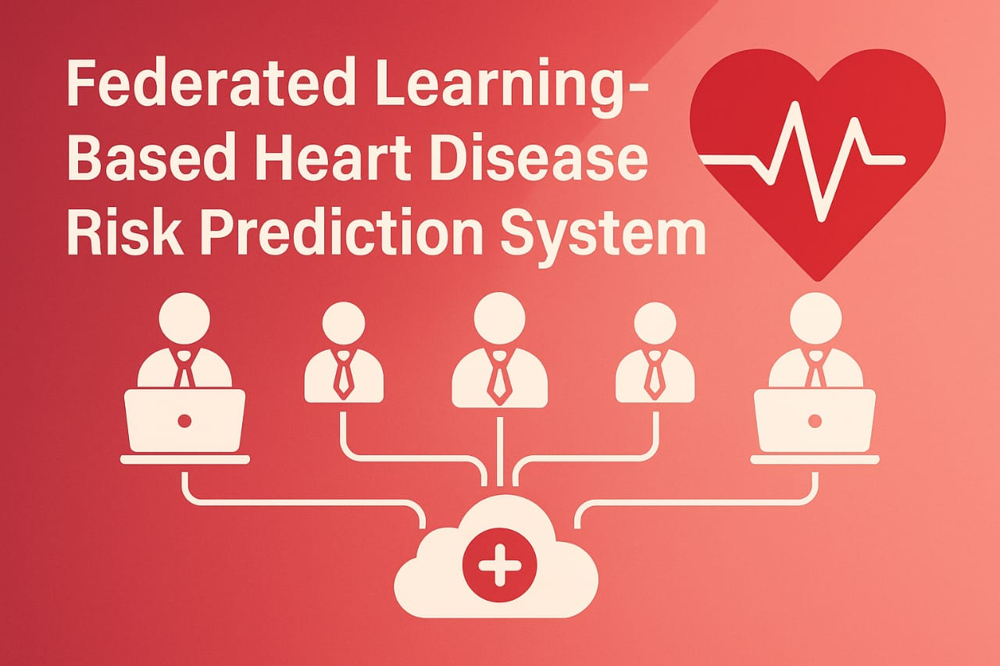
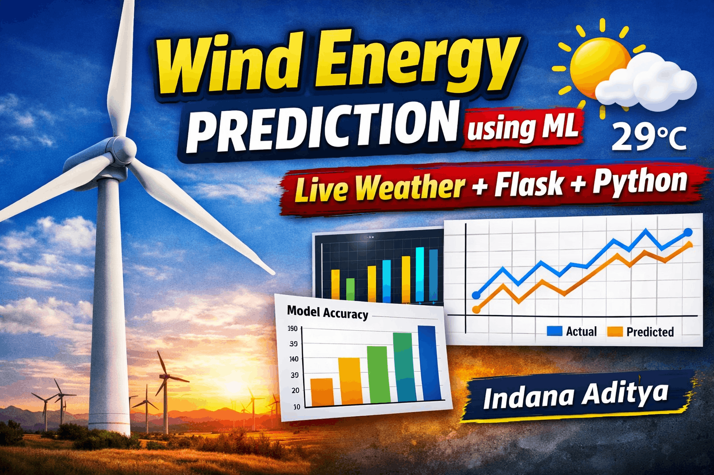
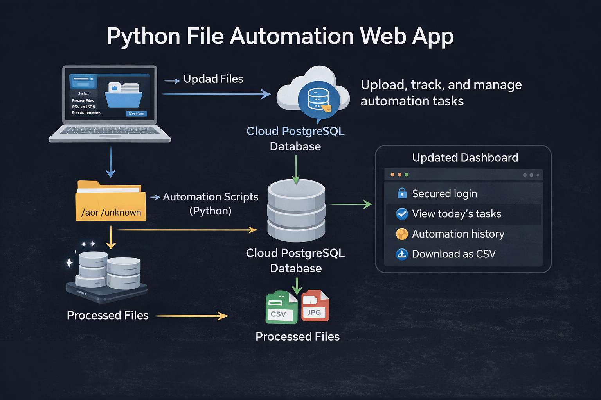
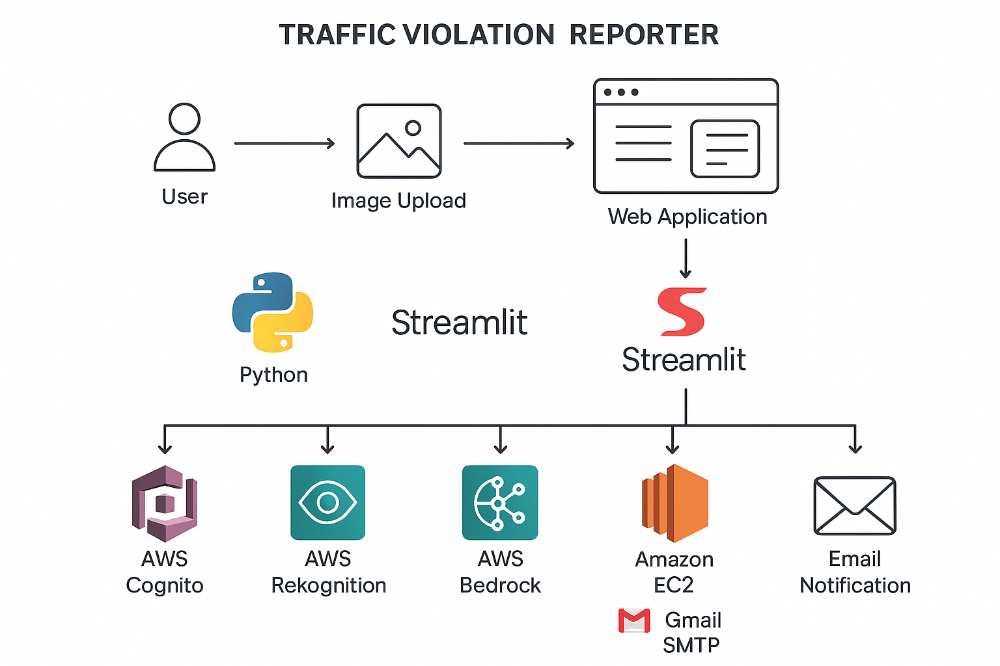
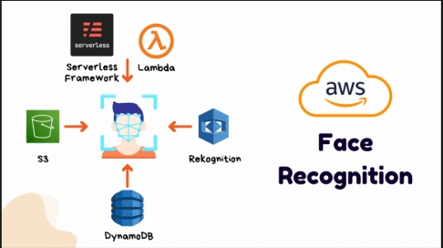
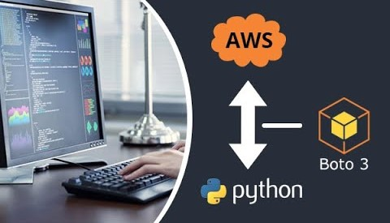
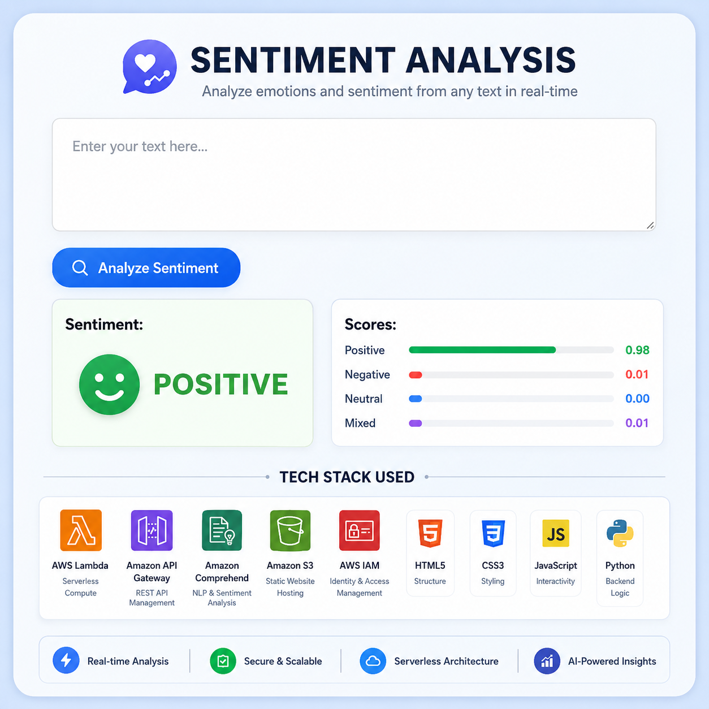
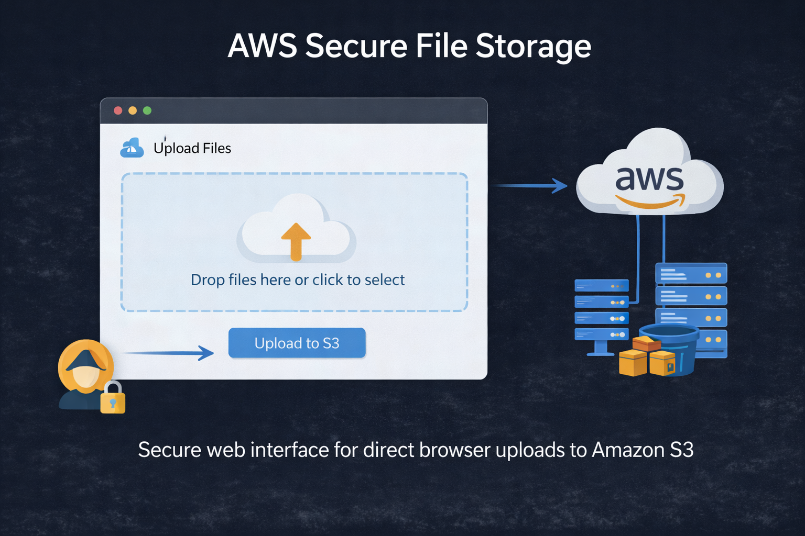
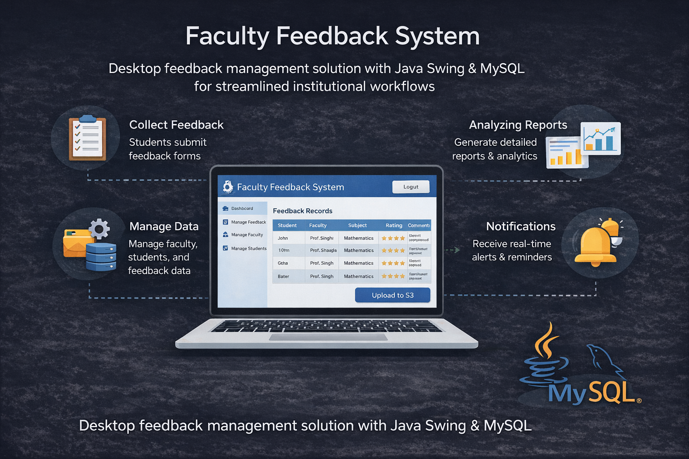

About Me
I am Aditya Indana, a Computer Science student specializing in AI & ML, with hands-on experience in cloud platforms, DevOps workflows, and production-oriented web development.
Aditya Indana Portfolio
I am a
I design and ship robust applications with modern frontend architecture, scalable backend services, and AWS-native automation. My focus is creating software that is fast, accessible, and trusted by users.
I am Aditya Indana, a Computer Science student specializing in AI & ML, with hands-on experience in cloud platforms, DevOps workflows, and production-oriented web development.
November 2025 - February 2026
Developed a weather-based wind turbine energy output prediction system; led the team and managed documentation, video presentation, and overall project execution.
July 2025 - October 2025
Here I worked on developing and maintaining Salesforce applications, focusing on customizing the platform to meet specific business requirements.
May 2025 - Jul 2025
Implemented CI/CD with Jenkins, containerized services with Docker, and automated IaC pipelines using Terraform and Kubernetes.
May 2024 - Jul 2024
Built Boto3 automation for EC2, S3, RDS, and IAM to reduce repetitive cloud operations and improve deployment consistency.
Sep 2022 - Present
Developed strong foundations in algorithms, data structures, full stack development, and applied machine learning.
Interactive case studies focused on cloud architecture, AI workflows, and developer tooling.

2026
A comprehensive Django-based web application for heart disease risk prediction using federated learning principles. The platform enables hospitals to upload datasets and doctors to make patient-level predictions while maintaining data privacy through distributed model training.
Open repository
2026
This project focuses on predicting the energy output of wind turbines based on weather conditions using Machine Learning and Flask. Accurate energy prediction is crucial for renewable energy management, helping energy companies, wind farm operators, and grid operators make informed decisions.
Open repository
2026
File automation means using Python to automatically perform tasks on files instead of doing them manually.
Open repository
2025
AI-based violation detection pipeline using AWS Rekognition and number-plate processing with automated reports.
Open repository
2025
Real-time attendance workflow with Rekognition, S3, DynamoDB, and a streamlined Streamlit interface.
Open repository
2024
Reusable automation toolkit for provisioning and operating AWS services with policy-driven scripting.
Open repository
2024
Serverless API using Lambda, API Gateway, and AWS Comprehend for scalable sentiment scoring.
Open repository
2024
Web uploader to securely transfer files to S3 with restricted access and minimal operational complexity.
Open repository
2023
Desktop feedback management solution with Java Swing and MySQL for streamlined institutional workflows.
Open repositorySelected certifications validating cloud, programming, and AI foundations.


Open to full-time roles, internships, and project collaborations in cloud engineering and full stack development.